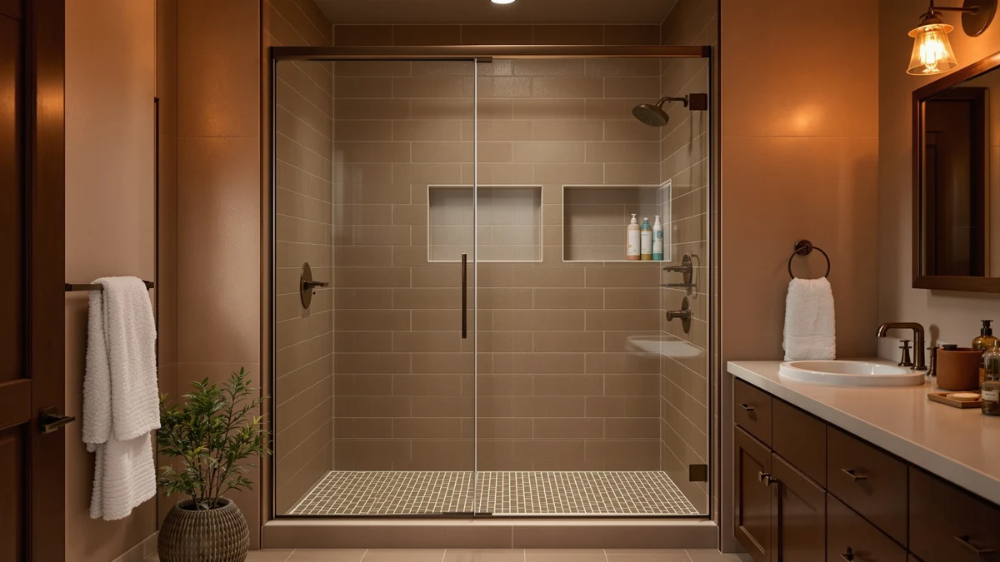

Best Cleaner for Glass Shower Doors with Soap Scum (2026)
Prices and picks verified as of October 2026. Independent, reader-supported reviews.


Quick Answer
The best cleaner for glass shower doors with soap scum is the Rain-X 630544 X-Treme Clean Shower, because it breaks down soap film and body-wash residue without heavy scrubbing, and two bottles cost $16.00 together. If your scum has hardened into a thicker film, the GlasWeld ProClean and UNGER Commercial RubOut give you a stronger formula to work through it.
Our pick: Rain-X 630544 X-Treme Clean Shower — $16.00 Check Price on Amazon
Bottom line: our top pick is the Rain-X 630544 X-Treme Clean Shower Door Cleaner at $16. The best budget option is the Rain-X 630035 X-Treme Clean Shower Door Cleaner at $9.13.
Things to Know Before You Buy
- Soap scum is different from hard water buildup. It forms from soap residue and body oils bonding to glass, and the best cleaner for glass shower doors with soap scum targets that film directly instead of only dissolving minerals.
- Price doesn't track with pack size evenly. These seven cleaners range from $9.97 for a single Rain-X bottle to $29.95 for GlasWeld ProClean, and a bigger price tag doesn't always mean a bigger bottle.
- Format changes how you apply it. Uncle Todd's ships as a paste rather than a spray, which means a different application and rinse routine than the six liquid formulas in this comparison.
- Some formulas double as hard water treatments. Brite & Clean and GlasWeld both market themselves for mineral deposits in addition to soap scum, so one bottle can cover both problems if your glass has both.
- A repellent only helps after the glass is clean. The Rain-X 630542 Shower Door Water works best once existing soap scum is gone, since it is built to stop new residue from bonding rather than remove what's already there.
The best cleaner for glass shower doors with soap scum needs to cut through a film of soap residue, body oils, and water minerals without scratching the glass or leaving streaks behind. We compared seven products built for shower glass, from a $9.97 Rain-X spray to a $29.95 GlasWeld paste, looking at their stated formulas, pack sizes, and what verified owners report after using them. The Rain-X 630544 X-Treme Clean Shower came out as our pick for most bathrooms, priced at $16.00 for two bottles and backed by a brand that makes several of the products in this comparison.
Soap scum builds up faster than most people expect. Bar soap and body wash both contain fatty acids that react with calcium and magnesium in tap water, and that reaction leaves a hazy film that bonds tighter to glass the longer it sits. A fresh layer wipes away easily, but scum that has cured for weeks resists plain water and needs a cleaner formulated to break down that bond instead of scrubbing at the surface forever.
These seven products span $9.97 to $29.95, and six of them remove existing scum while one, the Rain-X 630542 Shower Door Water, is meant to run after your glass is already clean to keep new residue from forming. Below, we break down pricing, pack size, and honest pros and cons for every pick, along with where each one falls short, so you can match a cleaner to how much buildup you're actually dealing with.
Why You Should Trust Us
Ilane Tall covers home and bath products for Best Shower Doors and has spent years comparing glass cleaners, shower hardware, and installation guides for US homeowners. We do not run a fake testing lab, and we don't claim to have scrubbed every shower door in this comparison with our own hands. Instead, we research manufacturer formulas, track verified owner feedback across hundreds of reviews, and cross-check pricing and sizing before recommending the best cleaner for glass shower doors with soap scum or any alternative in this guide. When a listing doesn't specify a detail, like whether a formula works on acrylic as well as glass, we say so directly instead of guessing.
How We Picked
We started by separating products built to remove soap scum that already exists from the one product in this comparison, the Rain-X 630542 Shower Door Water, built to prevent new residue instead. From there, we filtered candidates by three criteria for the best cleaner for glass shower doors with soap scum: a clearly stated formula rather than a vague marketing claim, transparent pricing with no hidden shipping costs, and a pattern of verified customer reviews instead of a handful of unverifiable ratings. We excluded listings that didn't disclose whether a formula was acid-based or safe on tile and chrome, since that detail changes how you can use a product beyond the shower door itself.
How We Compared
We compared these seven products on the factors that matter most for finding the best cleaner for glass shower doors with soap scum: formula type, including paste versus spray, price relative to bottle size, and what verified owners report about how much scrubbing each product actually requires. Manufacturers rarely publish independent lab data on how fast a formula breaks down soap film, so we leaned on patterns across many verified reviews for each product, looking for repeated mentions of no-scrub results or leftover residue rather than a single complaint. We also weighed each cleaner against its price per ounce, since a bottle that costs twice as much but does the same job isn't automatically the better buy because of its label.
Our Picks

Rain-X 630544 X-Treme Clean Shower
What we like
- Two bottles for $16.00 make it one of the cheapest options per ounce in this comparison
- Owners report it cuts through soap film and body-wash residue without heavy scrubbing
Flaws but not dealbreakers
- The formula targets existing scum and doesn't prevent new residue from forming
- A 12 ounce bottle runs out faster than the 16 ounce options from Uncle Todd's or UNGER
| Material | — |
| Size | 12 Fl Oz (Pack of 2) |
The Rain-X 630544 X-Treme Clean Shower is the cleaner we'd point to first for anyone searching for the best cleaner for glass shower doors with soap scum, and it's also the product behind the quick answer at the top of this guide. It targets soap film, body-wash residue, and general grime directly, with a formula Rain-X built specifically for shower glass rather than generic bathroom surfaces.
At $16.00 for two 12-ounce bottles, it's priced lower per ounce than five of the six other products in this comparison, and reviewers consistently note that a few sprays and a wipe clear daily scum without a scrub brush. The tradeoff is scope: this formula is built to remove what's already on the glass, so if you want to stop new residue from forming afterward, you'd pair it with a separate repellent like the Rain-X 630542 below.

Rain-X 630035 X-Treme Clean Shower
What we like
- At $9.97, it's the least expensive product in this comparison
- Uses the same soap-scum formula as the 630544 two-pack, in a single smaller bottle
Flaws but not dealbreakers
- One bottle instead of two means a higher per-ounce cost than the two-pack above
- No repellent component, so scum returns without a second cleaning pass down the line
| Material | — |
| Size | 12 Fl Oz (Pack of 1) |
The Rain-X 630035 X-Treme Clean Shower carries the same soap-scum formula as the 630544 pick above, in a single 12-ounce bottle instead of two. If you want to confirm that Rain-X's approach works on your bathroom's particular mix of soap and water before buying the bigger pack, this is the lower-commitment way to find out.
At $9.97, it undercuts every other product in this comparison on sticker price, though the cost per ounce lands close to the 630544 once you account for getting one bottle instead of two. Buyers researching this size tend to pick it up for a single shower rather than stocking several bathrooms, which is where the two-pack above turns into the better long-term value.

Rain-X 630542 Shower Door Water
What we like
- Two 16 ounce bottles give you more total product than the single-bottle options here
- Designed to stop new soap film and water spots from bonding to glass after cleaning
Flaws but not dealbreakers
- It doesn't remove existing soap scum, so it only works as a second step after another cleaner
- At $19.46, it costs more than the 630544 cleaner it's meant to pair with
| Material | — |
| Size | 16 Fl Oz. (Pack of 2) |
The Rain-X 630542 Shower Door Water is the one product in this comparison that isn't a scum remover at all. It's built to run after your glass is already clean, leaving a surface that makes it harder for soap film and water minerals to bond again the next time you shower.
At $19.46 for two 16-ounce bottles, it costs more than the 630544 cleaner above, which tracks with the different job it does. Skip it if you only plan to clean once and don't mind repeating the process later, but if you're tired of scrubbing the same soap scum every few weeks, pairing a cleaner with this step cuts down on how often you have to start over.

Hard Water Stain Remover &
What we like
- A 16 ounce bottle covers glass, tile, chrome, and stainless steel beyond the shower door itself
- Formulated and packaged in the USA, according to the brand
Flaws but not dealbreakers
- The paste format means more rubbing per application than a spray-and-wipe cleaner
- The mint scent is noticeable, which may bother anyone sensitive to strong fragrances
| Material | — |
| Size | 16 Fl Oz (Pack of 1) |
Uncle Todd's Hard Water Stain Remover ships as a mint-scented paste rather than a spray, which changes how you apply it compared with the six liquid formulas in this comparison. The thicker texture is built to work through soap film and mineral buildup together, and the brand markets it as a single bottle that replaces separate tile, tub, and chrome cleaners.
At $15.99 for 16 ounces, it costs less per ounce than the Brite & Clean, GlasWeld, and UNGER options below, and the same bottle works on porcelain and stainless fixtures elsewhere in the bathroom. The paste does call for more manual rubbing than a quick spray, so it suits buyers who don't mind a few extra minutes for a product that covers more than one surface.

Brite & Clean® (Bright &
What we like
- Includes documented instructions, including a QR code, for restoring glass with stubborn film
- Biodegradable formula that the brand says produces no harsh fumes
Flaws but not dealbreakers
- At 6 ounces, it's the smallest bottle in this comparison relative to its $16.95 price
- Stubborn film requires extra scrubbing pressure in a smaller area, per the brand's own instructions
| Material | — |
| Size | 6 Ounce (Pack of 1) |
Brite & Clean markets its formula at glass, shower doors, and windows, along with granite, porcelain, tile, stainless steel, and chrome. The documented restoration process built into the instructions sets it apart from the Rain-X sprays, including a QR code with extra steps for film that has sat long enough to start etching rather than sitting lightly on top of the surface.
That extra guidance points to a formula aimed at tougher jobs than weekly upkeep. At $16.95 for 6 ounces, it's priced closer to the GlasWeld and UNGER options than the Rain-X sprays, and the biodegradable formula means no strong fumes while you work. If a lighter spray hasn't budged your soap scum, the documented process here is the clearest reason to reach for this one instead.

GlasWeld ProClean Hard Water Stain
What we like
- Non-acid formula, a plus for anyone cleaning near other bathroom fixtures in the same session
- Ships with an applicator pad, so you're not reaching for a separate cloth or sponge
Flaws but not dealbreakers
- At $29.95 for 8 ounces, it's the most expensive product per ounce in this comparison
- The brand markets it broadly across car windshields and boat windows, not shower glass specifically
| Material | — |
| Size | 8 Ounce (Pack of 1) |
GlasWeld ProClean positions itself as a professional-grade option that breaks down soap film and mineral buildup without the acid found in some competing formulas. The included applicator pad is a detail none of the other six products in this comparison offer out of the box, useful when long-neglected film needs more direct contact than a spray bottle alone provides.
At $29.95 for 8 ounces, it's priced well above the Rain-X sprays and Uncle Todd's paste, and that price reflects a formula the brand also markets for car windshields and boat windows, beyond shower glass. If your shower door has gone months without attention and a cheaper spray has already failed, the non-acid formula and built-in applicator here are worth the premium.

UNGER Commercial RubOut Hard Water
What we like
- Designed for professional use, so the formula is built to restore clarity without abrasive tools
- A 16 ounce bottle matches Uncle Todd's for the most product per bottle in this comparison
Flaws but not dealbreakers
- At $22.50, it costs more than every option here except the GlasWeld ProClean
- The commercial branding and packaging feel less consumer-friendly than the Rain-X or Brite & Clean bottles
| Material | — |
| Size | 16 Fl Oz (Pack of 1) |
UNGER built its RubOut Hard Water Stain Remover for the commercial cleaning trade, which shows in both the ready-to-use formula and the no-nonsense 16 ounce bottle. The brand markets it as safe for glass without scratching the surface, aiming it at the same soap film, mineral residue, and rust stains the consumer-facing products in this comparison target.
The $22.50 price lands it in the upper half of this lineup, second only to the GlasWeld ProClean. That price buys a formula built around professional results without needing abrasive tools, which suits buyers who want a no-frills, ready-to-use option over a bottle designed with a retail shelf in mind.
Quick Comparison
| Product | Material | Price | Rating | Best for | Get it |
|---|---|---|---|---|---|
| Rain-X 630544 X-Treme Clean Shower | — | $16.00 | 4 | Everyday soap scum on glass doors | View on Amazon → |
| Rain-X 630035 X-Treme Clean Shower | — | $9.97 | 4 | Trying the formula in one bottle | View on Amazon → |
| Rain-X 630542 Shower Door Water | — | $19.46 | 4 | Preventing scum after cleaning | View on Amazon → |
| Hard Water Stain Remover & | — | $15.99 | 4 | One paste for glass, tile, and chrome | View on Amazon → |
| Brite & Clean® (Bright & | — | $16.95 | 4 | Stubborn scum a spray hasn't fixed | View on Amazon → |
| GlasWeld ProClean Hard Water Stain | — | $29.95 | 4 | Heavy buildup, non-acid formula | View on Amazon → |
| UNGER Commercial RubOut Hard Water | — | $22.50 | 4 | Commercial-grade, ready-to-use cleaning | View on Amazon → |
The Competition
We looked at more than these seven products before settling on this lineup for the best cleaner for glass shower doors with soap scum. Plain dish soap and water came up constantly in owner discussions as a home fix, and it does cut grease-based scum in a pinch, but it needs frequent reapplication and doesn't touch the mineral half of the problem, so we left it out of a comparison built around dedicated commercial formulas.
We also considered generic all-purpose bathroom sprays that don't call out soap scum or glass specifically. They handle counters and fixtures well, but they aren't formulated to break down the fatty-acid film that builds on shower glass, so they fall outside the scope of a guide built around that exact problem. Abrasive scouring pads came up too, and while they can scrub through heavy film fast, the grit risks scratching glass permanently, which rules them out for a comparison specifically about glass doors.
Among the seven products we did include, the Rain-X 630544 remains our pick for most households searching for the best cleaner for glass shower doors with soap scum, while the other six cover heavier buildup, multi-surface cleaning, and prevention for glass that's already clean.
What these prices have actually done
We check the price of every product on this page every hour and keep the record. These figures are observations, not estimates or forecasts.
- Rain-X 630544 X-Treme Clean Shower Door Cleaner has ranged from $13.60 to $21.99 across 26 hourly price checks since September 27, 2026. It was $16.00 at the last check.
- Rain-X 630542 Shower Door Water Repellent has ranged from $16.51 to $19.55 across 25 hourly price checks since September 27, 2026. It was $19.19 at the last check.
- Hard Water Stain Remover & Soap Scum Shower Cleaner, Mint Paste, 16 Oz has ranged from $13.59 to $15.99 across 23 hourly price checks since September 27, 2026. It was $15.99 at the last check.
- Brite & Clean® has held at $16.95 across 25 hourly price checks since September 26, 2026. It was $16.95 at the last check.
- GlasWeld ProClean Hard Water Stain Remover for Glass & Metal has ranged from $22.46 to $29.95 across 25 hourly price checks since September 26, 2026. It was $29.95 at the last check.
Last updated October 30, 2026. Amazon prices change constantly; the figure you see on Amazon right now is the one that counts.